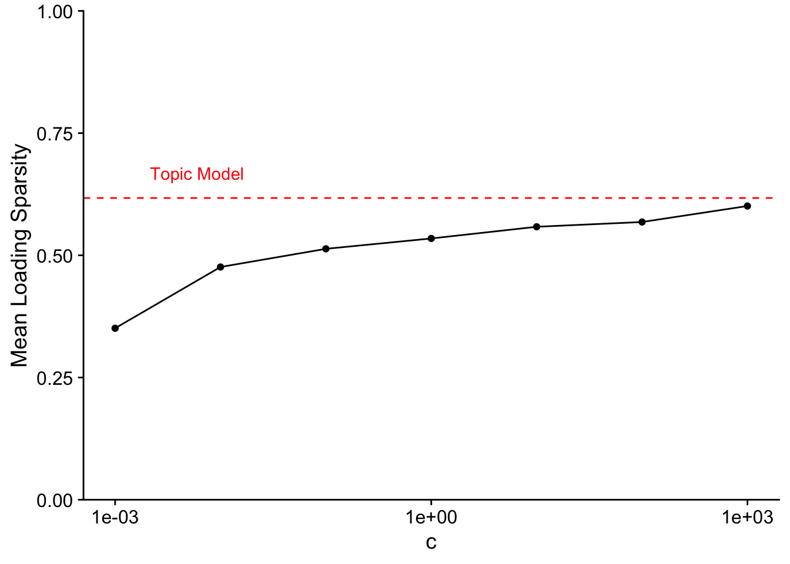

Simulations with Multiplicative Effects
2024-09-26
Last updated: 2025-09-05
Checks: 6 1
Knit directory: log1p_experiments/
This reproducible R Markdown analysis was created with workflowr (version 1.7.1). The Checks tab describes the reproducibility checks that were applied when the results were created. The Past versions tab lists the development history.
The R Markdown file has unstaged changes. To know which version of
the R Markdown file created these results, you’ll want to first commit
it to the Git repo. If you’re still working on the analysis, you can
ignore this warning. When you’re finished, you can run
wflow_publish to commit the R Markdown file and build the
HTML.
Great job! The global environment was empty. Objects defined in the global environment can affect the analysis in your R Markdown file in unknown ways. For reproduciblity it’s best to always run the code in an empty environment.
The command set.seed(20240402) was run prior to running
the code in the R Markdown file. Setting a seed ensures that any results
that rely on randomness, e.g. subsampling or permutations, are
reproducible.
Great job! Recording the operating system, R version, and package versions is critical for reproducibility.
Nice! There were no cached chunks for this analysis, so you can be confident that you successfully produced the results during this run.
Great job! Using relative paths to the files within your workflowr project makes it easier to run your code on other machines.
Great! You are using Git for version control. Tracking code development and connecting the code version to the results is critical for reproducibility.
The results in this page were generated with repository version 97bb5cb. See the Past versions tab to see a history of the changes made to the R Markdown and HTML files.
Note that you need to be careful to ensure that all relevant files for
the analysis have been committed to Git prior to generating the results
(you can use wflow_publish or
wflow_git_commit). workflowr only checks the R Markdown
file, but you know if there are other scripts or data files that it
depends on. Below is the status of the Git repository when the results
were generated:
Ignored files:
Ignored: .DS_Store
Ignored: .Rhistory
Ignored: analysis/.Rhistory
Ignored: analysis/pancreas_cytokine_S1_cache/
Ignored: data/.DS_Store
Unstaged changes:
Modified: analysis/multiplicative_sim.Rmd
Note that any generated files, e.g. HTML, png, CSS, etc., are not included in this status report because it is ok for generated content to have uncommitted changes.
These are the previous versions of the repository in which changes were
made to the R Markdown (analysis/multiplicative_sim.Rmd)
and HTML (docs/multiplicative_sim.html) files. If you’ve
configured a remote Git repository (see ?wflow_git_remote),
click on the hyperlinks in the table below to view the files as they
were in that past version.
| File | Version | Author | Date | Message |
|---|---|---|---|---|
| Rmd | 97bb5cb | Eric Weine | 2025-09-02 | added small c fit to multiplicative simulation |
| html | 97bb5cb | Eric Weine | 2025-09-02 | added small c fit to multiplicative simulation |
| Rmd | 93a77c0 | Eric Weine | 2025-08-12 | added multiplicative simulation |
| html | 93a77c0 | Eric Weine | 2025-08-12 | added multiplicative simulation |
Introduction
Previously, we have seen that the topic model is more likely to cluster groups, where the log1p model is more likely to give a parts based representation of the data. One intuition for why this might be happening is that if there are truly multiplicative effects in the data, the topic model may not be able to represent them well because the factors are additive. Below, I explore a simulation scenario where this appears to be the case.
Simulation
I simulated expression values for \(5\) different groups, where \(80\%\) of genes were not expressed at all in each group and the remaining \(20\%\) had mean expression sampled from an exponential distribution with rate \(1\) (note that the expressed genes were mutually exclusive between groups). Then, for each group I created two subgroups, where in one subgroup the expression is as described above, and in the other subgroup a random subset of the expressed genes is expressed at \(\exp(b + 2.5)\), where \(b\) is the baseline expression in the group.
I then fit both the topic model and the log1p model with \(c = 1\) to this data.
# I think that the next thing I should try is to do more direct
# multiplication instead of using the link function
n_cells <- 1000
grouping <- c(
rep("A1", 100), rep("A2", 100),
rep("B1", 100), rep("B2", 100),
rep("C1", 100), rep("C2", 100),
rep("D1", 100), rep("D2", 100),
rep("E1", 100), rep("E2", 100)
)
set.seed(1)
lambda_group1_c <- c(rexp(200), rep(0, 800))
lambda_group2_c <- c(rep(0, 200), rexp(200), rep(0, 600))
lambda_group3_c <- c(rep(0, 400), rexp(200), rep(0, 400))
lambda_group4_c <- c(rep(0, 600), rexp(200), rep(0, 200))
lambda_group5_c <- c(rep(0, 800), rexp(200))
mult_vec <- rep(2.5, 1000)
mult_vec[sample(1:1000, size = 800)] <- 0
lambda_group1_t <- if_else(
mult_vec == 0,
lambda_group1_c,
exp(mult_vec + lambda_group1_c)
)
lambda_group2_t <- if_else(
mult_vec == 0,
lambda_group2_c,
exp(mult_vec + lambda_group2_c)
)
lambda_group3_t <- if_else(
mult_vec == 0,
lambda_group3_c,
exp(mult_vec + lambda_group3_c)
)
lambda_group4_t <- if_else(
mult_vec == 0,
lambda_group4_c,
exp(mult_vec + lambda_group4_c)
)
lambda_group5_t <- if_else(
mult_vec == 0,
lambda_group4_c,
exp(mult_vec + lambda_group5_c)
)
lambda_list <- list()
Y_list <- list()
lambda_list[[1]] <- lambda_group1_c
lambda_list[[2]] <- lambda_group1_t
lambda_list[[3]] <- lambda_group2_c
lambda_list[[4]] <- lambda_group2_t
lambda_list[[5]] <- lambda_group3_c
lambda_list[[6]] <- lambda_group3_t
lambda_list[[7]] <- lambda_group4_c
lambda_list[[8]] <- lambda_group4_t
lambda_list[[9]] <- lambda_group5_c
lambda_list[[10]] <- lambda_group5_t
set.seed(1)
n_cells_per_group <- 100
n_genes <- 1000
for (group in 1:10) {
Lambda <- matrix(
data = rep(lambda_list[[group]], n_cells_per_group),
nrow = n_cells_per_group,
ncol = n_genes,
byrow = TRUE
)
Y <- matrix(
data = rpois(n = n_cells_per_group * n_genes, lambda = as.vector(Lambda)),
nrow = n_cells_per_group,
ncol = n_genes
)
Y_list[[group]] <- Y
}
Y <- do.call(rbind, Y_list)
Y <- as(Y, "CsparseMatrix")
Y <- Y[,Matrix::colSums(Y) > 0]
library(fastTopics)
ft_r1 <- fastTopics:::fit_pnmf_rank1(Y)
init_LL <- cbind(
ft_r1$L,
matrix(data = 1e-5, nrow = nrow(Y), ncol = 5)
)
init_FF <- cbind(
ft_r1$F,
matrix(data = 1e-5, nrow = ncol(Y), ncol = 5)
)
ft_init <- init_poisson_nmf(X = Y, F = init_FF, L = init_LL)
ft_r1_init <- fit_poisson_nmf(
X = Y,
fit0 = ft_init,
control = list(nc = 7),
verbose = "none"
)
sp1 <- structure_plot(ft_r1_init, loadings_order = 1:n_cells, grouping = grouping, gap = 10) +
theme(axis.text.x = element_text(angle = 0,hjust = 0.5, size = 12)) + ylab("Membership") + ggtitle("Topic Model")
log1p_fit_list <- list()
cc_vec <- c(1e-3, 1e-2, 1e-1, 1, 10, 100, 1000)
for (cc in cc_vec) {
set.seed(1)
log1p_fit_list[[as.character(cc)]] <- fit_poisson_log1p_nmf(
Y = Y, K = 6, loglik = "exact", init_method = "rank1",
control = list(maxiter = 250, verbose = FALSE), cc = cc
)
}
sp2 <- normalized_structure_plot(log1p_fit_list[[as.character(1)]], loadings_order = 1:n_cells, grouping = grouping, gap = 10, topics = c(1, rev(2:6))) +
theme(axis.text.x = element_text(angle = 0,hjust = 0.5, size = 12)) + ylab("Membership") + ggtitle("log1p Model (c = 1)")
sp3 <- normalized_structure_plot(log1p_fit_list[[as.character(0.001)]], loadings_order = 1:n_cells, grouping = grouping, gap = 10, topics = c(1, rev(2:6))) +
theme(axis.text.x = element_text(angle = 0,hjust = 0.5, size = 12)) + ylab("Membership") + ggtitle("log1p Model (c = 1e-3)")ggarrange(sp1, sp2, sp3, nrow = 3, ncol = 1)
hoyer_sparsity <- function(x) {
n <- length(x)
(1 / (sqrt(n) - 1)) * (sqrt(n) - (sum(x) / (sqrt(sum(x ^ 2)))))
}
for (cc in cc_vec) {
log1p_fit_list[[as.character(cc)]]$l_sparsity <- apply(
log1p_fit_list[[as.character(cc)]]$LL, 2, hoyer_sparsity
)
log1p_fit_list[[as.character(cc)]]$f_sparsity <- apply(
log1p_fit_list[[as.character(cc)]]$FF, 2, hoyer_sparsity
)
}
l_sparsity_vec <- unlist(lapply(log1p_fit_list, function(x) {mean(x$l_sparsity)}))
f_sparsity_vec <- unlist(lapply(log1p_fit_list, function(x) {mean(x$f_sparsity)}))
s <- Matrix::rowSums(Y)
s <- s / mean(s)
l_tm_sparsity <- mean(apply(diag(1/s) %*% ft_r1_init$L, 2, hoyer_sparsity))
f_tm_sparsity <- mean(apply(ft_r1_init$F, 2, hoyer_sparsity))
df_sparsity_l <- data.frame(
cc = cc_vec,
sparsity = l_sparsity_vec
)
ggplot(data = df_sparsity_l, aes(x = cc, y = sparsity)) +
geom_point() +
geom_line() +
cowplot::theme_cowplot() +
scale_y_continuous(limits = c(0, 1), expand = c(0, 0)) +
scale_x_continuous(breaks = c(1e-3, 1, 1e3), transform = "log10") +
xlab("c") +
ylab("Mean Loading Sparsity") +
geom_hline(yintercept = l_tm_sparsity, color = "red", linetype = "dashed") +
ggplot2::annotate(
geom="text", x=0.006, y=l_tm_sparsity + 0.05, label="Topic Model", color="red"
)
| Version | Author | Date |
|---|---|---|
| 93a77c0 | Eric Weine | 2025-08-12 |
df_sparsity_f <- data.frame(
cc = cc_vec,
sparsity = f_sparsity_vec
)
ggplot(data = df_sparsity_f, aes(x = cc, y = sparsity)) +
geom_point() +
geom_line() +
cowplot::theme_cowplot() +
scale_y_continuous(limits = c(0, 1), expand = c(0, 0)) +
scale_x_continuous(breaks = c(1e-3, 1, 1e3), transform = "log10") +
xlab("c") +
ylab("Mean Loading Sparsity") +
geom_hline(yintercept = f_tm_sparsity, color = "red", linetype = "dashed") +
ggplot2::annotate(
geom="text", x=0.006, y=f_tm_sparsity + 0.05, label="Topic Model", color="red"
)
While neither model captures the structure perfectly (which is expected because I’m not generating data from a log1p or topic model), it is clear that the log1p model is much closer. The topic model, on the other hand, just completely clusters the groups.
Finally, I wanted to know what GLM-PCA would do with this simulation. Below is a plot of the first two PCs:
set.seed(1)
fgpca_fit <- fit_glmpca_pois(Y = Matrix::t(Y), K = 2, control = list(maxiter = 350))
gpca_df <- as.data.frame(fgpca_fit$V)
gpca_df$grouping <- grouping
ggplot(data = gpca_df, aes(x = k_1, y = k_2)) +
geom_point(aes(color = grouping)) +
cowplot::theme_cowplot() +
scale_color_manual(values = fastTopics:::kelly()[2:11]) +
xlab("PC1") +
ylab("PC2")It’s interesting that in only two dimensions you are able to get clear clusters, but you do not get a very parts based representation.
sessionInfo()R version 4.4.0 (2024-04-24)
Platform: aarch64-apple-darwin20
Running under: macOS Ventura 13.5
Matrix products: default
BLAS: /Library/Frameworks/R.framework/Versions/4.4-arm64/Resources/lib/libRblas.0.dylib
LAPACK: /Library/Frameworks/R.framework/Versions/4.4-arm64/Resources/lib/libRlapack.dylib; LAPACK version 3.12.0
locale:
[1] en_US.UTF-8/en_US.UTF-8/en_US.UTF-8/C/en_US.UTF-8/en_US.UTF-8
time zone: America/New_York
tzcode source: internal
attached base packages:
[1] stats graphics grDevices utils datasets methods base
other attached packages:
[1] fastglmpca_0.1-107 dplyr_1.1.4 ggpubr_0.6.0 ggh4x_0.3.0
[5] log1pNMF_0.1-6 fastTopics_0.7-25 ggplot2_3.5.2
loaded via a namespace (and not attached):
[1] tidyselect_1.2.1 viridisLite_0.4.2 farver_2.1.2
[4] fastmap_1.2.0 lazyeval_0.2.2 promises_1.3.2
[7] digest_0.6.37 lifecycle_1.0.4 invgamma_1.1
[10] magrittr_2.0.3 compiler_4.4.0 rlang_1.1.6
[13] sass_0.4.10 progress_1.2.3 tools_4.4.0
[16] yaml_2.3.10 data.table_1.17.0 knitr_1.50
[19] ggsignif_0.6.4 labeling_0.4.3 prettyunits_1.2.0
[22] htmlwidgets_1.6.4 plyr_1.8.9 abind_1.4-5
[25] Rtsne_0.17 workflowr_1.7.1 withr_3.0.2
[28] purrr_1.0.4 grid_4.4.0 git2r_0.33.0
[31] colorspace_2.1-1 scales_1.3.0 gtools_3.9.5
[34] MASS_7.3-61 cli_3.6.5 rmarkdown_2.29
[37] crayon_1.5.3 startupmsg_0.9.6.1 generics_0.1.3
[40] RcppParallel_5.1.10 rstudioapi_0.16.0 httr_1.4.7
[43] reshape2_1.4.4 pbapply_1.7-2 cachem_1.1.0
[46] stringr_1.5.1 parallel_4.4.0 vctrs_0.6.5
[49] Matrix_1.7-0 jsonlite_2.0.0 carData_3.0-5
[52] car_3.1-2 hms_1.1.3 mixsqp_0.3-54
[55] ggrepel_0.9.6 rstatix_0.7.2 irlba_2.3.5.1
[58] plotly_4.10.4 tidyr_1.3.1 jquerylib_0.1.4
[61] glue_1.8.0 cowplot_1.1.3 uwot_0.2.3
[64] stringi_1.8.7 gtable_0.3.6 later_1.4.2
[67] sfsmisc_1.1-18 quadprog_1.5-8 munsell_0.5.1
[70] tibble_3.2.1 pillar_1.10.2 htmltools_0.5.8.1
[73] daarem_0.7 truncnorm_1.0-9 R6_2.6.1
[76] rprojroot_2.0.4 evaluate_1.0.3 lattice_0.22-6
[79] backports_1.5.0 RhpcBLASctl_0.23-42 broom_1.0.6
[82] SQUAREM_2021.1 ashr_2.2-66 httpuv_1.6.15
[85] bslib_0.9.0 Rcpp_1.0.14 distr_2.9.3
[88] whisker_0.4.1 xfun_0.52 fs_1.6.6
[91] pkgconfig_2.0.3